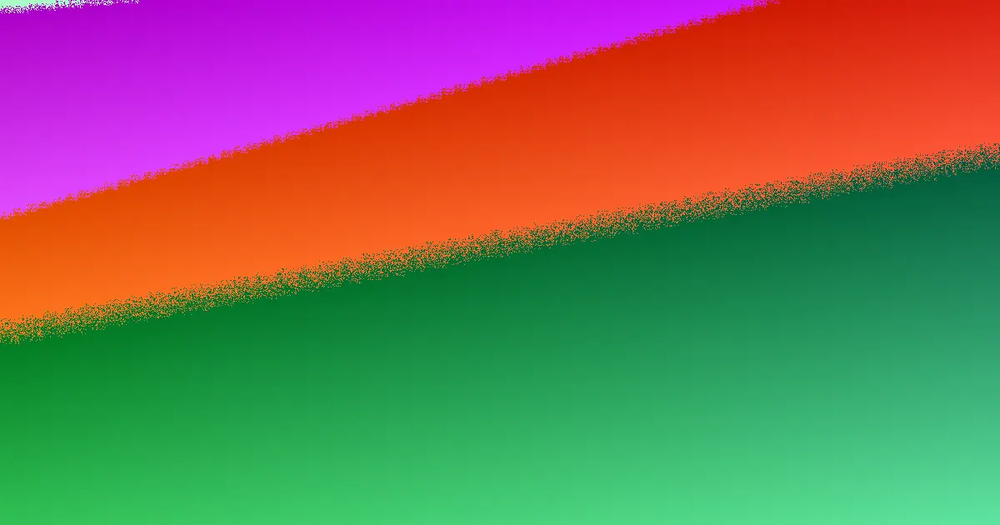

A Gold Coast retaining wall quote should prioritise site conditions over material preference. Key considerations include retained height, surcharge loads, proximity to structures, services, drainage, and lawful discharge points. Documenting these factors before engaging a contractor ensures a more accurate assessment and quote, leading to a durable and compliant retaining wall solution.
For local buyers, retaining wall builders gold coast maintenance understanding the site conditions before selecting a wall system
Retaining Wall Builders Gold Coast Maintenance Explained
A retaining wall functions as a small civil system, requiring careful consideration of structure, water management, site access, and necessary approvals. When seeking quotes from retaining wall builders in Gold Coast, the initial discussion should focus on site-specific conditions rather than a predetermined material choice. A comprehensive enquiry brief should include the suburb, approximate dimensions, observable symptoms of any existing issues, and details about what lies above the proposed wall location. Providing photographs that capture the entire wall alignment, the retained slope, nearby structures, driveways, pools, fences, and evidence of water flow after rain is crucial. These details assist contractors in assessing whether the project is a straightforward replacement, involves drainage challenges, presents access difficulties, or requires further investigation before defining the scope.
Accurate measurements of the retained height along the full alignment, including any stepped sections, are essential. Documenting surcharge sources, such as fill, traffic, pools, buildings, or steep ground, is equally important. Note any access constraints for machinery, material delivery, and spoil removal. When requesting a quote, ensure it explicitly states the drainage assumptions, not just the chosen wall material.
Approval Considerations Before Material Selection
The guide highlights that the Gold Coast's retaining wall exemption has specific conditions. Even a low wall may require formal assessment if site factors like load, proximity to boundaries, existing infrastructure, or a safety role are involved. Wall height is only one component of the initial screening process. The five-part approval screen serves as a practical checklist for the initial consultation:
- Height and geometry
- Surcharge loads
- Separation distances from buildings and other retaining walls
- Presence of services and easements
- Consideration of fences and pools
The separation distance from existing buildings and other retaining walls is particularly emphasised, with 1.5 metres often cited as a key condition for Gold Coast exemptions. The combined height of fences and walls, along with any pool barrier functions, must be clarified before a price is considered final. If the approval pathway is uncertain, it is advisable to ask the contractor what additional information is required before design, approval, or construction assumptions can be confirmed. This proactive approach is more beneficial than assuming a wall is exempt based on a superficial visual assessment.
Drainage: An Integral Part of Wall Design
Effective retaining wall drainage in the Gold Coast area requires a systematic approach, tracing water flow from its source to its lawful discharge point. The recommended sequence involves four key components:
- Retained soil behind filter fabric: This fabric allows water to pass through while preventing fine soil particles from entering the drainage system, thus avoiding siltation and maintaining drain efficiency.
- Free-draining aggregate: A layer of gravel placed against the back of the wall provides an unimpeded path for water to flow downwards, preventing hydrostatic pressure buildup against the wall.
- Perforated ag pipe: Positioned at the base of the aggregate layer, this pipe collects water and channels it along the wall's base. It must be installed with a consistent fall to ensure effective water removal.
- A lawful point of discharge: This is the designated location where collected water can be legally released. Confirming this outlet before backfilling is crucial, as the preceding components only facilitate water movement.
Without a resolved discharge point, the drainage system is incomplete. Surface flow, seepage, irrigation, and roofwater must all be accounted for. A visible leak might indicate a more extensive, unresolved water path. If a suitable connection point is not immediately apparent, investigating potential discharge routes should be considered a preconstruction task. Detailed drainage specifications in a quote are important for comparison. A lower price might omit excavation, filter fabric, aggregate, pipe fall requirements, cleanout access, or the discharge route. A transparent quote will clearly outline what is included and what further checks are necessary before backfilling.
Assessing Repair vs. Replacement Needs
For retaining wall repair projects on the Gold Coast, the recommended approach is to photograph the symptoms comprehensively, rather than focusing solely on the most visibly damaged section. A broader view of the site context is essential for distinguishing between drainage issues, post rotation, foundation movement, and material decay. This wider perspective also helps in understanding the loads imposed from above the wall, which is critical when surcharge is a contributing factor.
For walls exhibiting lean or rotation, photographs should capture the base, top, and the retained slope. It is advisable to avoid loading or excavating near a visibly unstable wall. If bulging or opened joints are observed, document whether the movement is occurring between posts, through the masonry, or across the entire length of the wall. Staining and soil loss should be traced to identify wet areas, existing pipe outlets, and signs of washed-out fines. Repair may be the appropriate course of action when the issue is localised and the drainage, posts, and retained ground can be clearly assessed and rectified. Replacement becomes a more likely consideration when movement, decay, or significant water issues are evident across a wider section of the wall.
- Document Site Conditions. Photograph the entire wall alignment, retained slope, nearby structures, fences, pools, and any signs of water after rain. Note dimensions and what sits above the wall.
- Assess Approval Requirements. Review height, surcharge, separation distances, services, easements, fences, and pool proximity. Understand Gold Coast exemption conditions.
- Detail Drainage Plan. Ensure the plan includes filter fabric, free-draining aggregate, a graded ag pipe, and a lawful point of discharge. Confirm these in writing.
- Request Comprehensive Quotes. Ask for written details on materials, drainage, demolition, access, spoil removal, backfill, and reinstatement to compare scopes accurately.
Common questions
What are the key factors for a retaining wall quote on the Gold Coast? A quote should begin with site evidence, not just material preference. Key factors include retained height, surcharge loads (e.g., driveways, pools), proximity to buildings, services, drainage systems, and the lawful point of discharge for water.
When does a low retaining wall need formal assessment on the Gold Coast? Even low walls may require assessment if site conditions involve significant surcharge loads, proximity to boundaries or infrastructure, or if the wall serves a safety role. The 1.5-metre separation rule is a common condition for exemptions.
Why is drainage so critical for retaining walls? Proper drainage prevents hydrostatic pressure buildup, which can lead to wall failure. A complete system includes filter fabric, free-draining aggregate, a graded perforated pipe, and a lawful discharge point to manage water effectively.
retaining wall builders gold coast and site planning for homeowners.